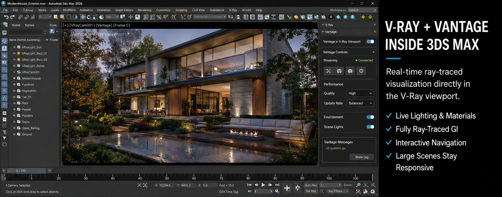
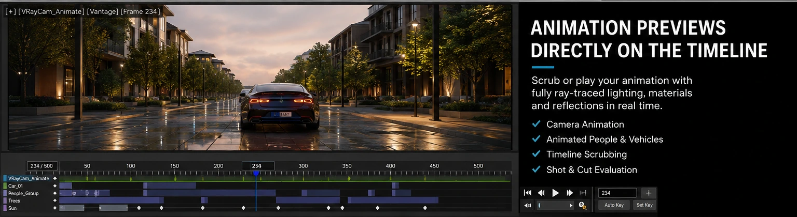

Waiting for test renders is one of those little parts of 3D work that does not seem terrible until you add up how many times you do it.
Move a light.
Render.
Change the camera.
Render.
Adjust a material.
Render again.
Realize the first light was actually better.
Question every decision that led you into 3D graphics.
Chaos has been steadily pushing V-Ray toward a much more interactive workflow, and one of the more interesting recent developments is now available for 3ds Max: Chaos Vantage running directly inside the V-Ray viewport.
Instead of treating real-time visualization as a separate destination, V-Ray and Vantage can now work together inside the same Max workspace.
That sounds like a fairly small interface change.
For visualization work, it could be a much bigger deal.
What Vantage in the V-Ray viewport actually does
Chaos Vantage is a real-time ray-traced visualization environment designed to work with production scenes.
The newer V-Ray workflow brings that rendering directly into the viewport rather than forcing you to constantly bounce between 3ds Max and a separate application.
Chaos published a dedicated 3ds Max tutorial on July 15, 2026 showing the workflow.
The basic setup is surprisingly simple.
Inside Render Setup:
1. Switch the render target to ActiveShade. 2. Set V-Ray GPU as the ActiveShade renderer. 3. Open the Vantage controls. 4. Enable Vantage in the V-Ray viewport.
The selected viewport then becomes a live ray-traced view of the scene.
You can orbit, pan, move the camera, adjust lighting and continue working while Vantage updates the rendered result.
That is the interesting part.
You are not exporting a scene, rendering a preview and then returning to Max to make another change.
You are still working in Max.

Why this could matter more than another faster renderer
There is a difference between rendering faster and removing rendering as a separate step.
If a test render takes one minute instead of three minutes, that is obviously useful.
If you no longer need the test render for many decisions, the workflow changes completely.
Lighting is a good example.
Normally you may adjust a sun angle, render, inspect the shadows, change the angle again and repeat.
With a responsive ray-traced viewport, that becomes much closer to lighting a scene interactively.
Move the light.
See the result.
Adjust again.
The feedback loop becomes dramatically shorter.
That encourages experimentation because experimenting costs less time.
And creatively, that matters.
When every idea requires several minutes of waiting, you naturally become more conservative about testing ideas.
When the result is immediate, trying something weird costs almost nothing.
Sometimes weird turns out to be better.
Heavy archviz scenes are where this gets interesting
Real-time rendering is easy to demonstrate with a chair, a few lights and an empty studio.
Production visualization scenes are rarely that polite.
They contain:
- Large architectural models - Thousands of scattered plants - High-resolution textures - Displacement - Complex glass - Cars - Furniture - People - Animated objects - Multiple lighting systems
Chaos specifically highlights Vantage's ability to remain interactive with large datasets, dense vegetation scatters and displacement-heavy scenes.
That makes the feature much more relevant to actual architectural visualization instead of just being a nice technology demo.
Obviously, performance will still depend heavily on the GPU, scene complexity, texture memory and what features are being used.
Real-time does not mean infinite-time wizardry.
But the goal is clearly to let artists remain interactive much deeper into the production process.
Animation previews may be the sleeper feature
The part that could become especially useful is animation.
Chaos says Vantage in the viewport can preview animated crowds, vehicle paths and camera cuts directly on the 3ds Max timeline.
That means an artist can scrub or play an animation and evaluate the actual rendered scene rather than relying entirely on shaded viewport previews.
For camera animation, this is huge.
Timing is visual.
A technically correct camera move can still feel terrible.
Maybe it accelerates too quickly.
Maybe a building enters frame at the wrong moment.
Maybe a tree blocks the hero shot for three seconds.
Maybe your elegant cinematic move suddenly feels like somebody mounted the camera to a shopping cart.
Those problems are much easier to judge when the viewport resembles the finished image.

Lighting and look development should feel more natural
Vantage also supports V-Ray cameras, lights, materials, reflections and global illumination.
That means the real-time preview is not simply a generic game-engine interpretation of the scene.
It is connected to the same V-Ray ecosystem used for the production render.
That distinction matters.
One of the historical annoyances of real-time visualization has been recreating the look somewhere else.
You build the V-Ray scene.
Then you move it into another engine.
Then something changes.
Then you fix the material.
Then the light looks different.
Then suddenly you are maintaining two slightly different versions of the same project because apparently you were not busy enough already.
Keeping real-time exploration closer to the V-Ray scene reduces that disconnect.
Vantage is becoming less of a separate application
Chaos has gradually expanded Vantage beyond its original role as a companion viewer for V-Ray scenes.
Vantage 3 added support for open standards including USD and MaterialX, allowing it to fit into pipelines beyond a strictly V-Ray-only setup.
But embedding Vantage directly into DCC workflows may be the more important direction for everyday artists.
Most artists do not wake up hoping to add another application to the pipeline.
We already have enough icons on the taskbar.
The better workflow is often the one where the technology quietly appears inside the software you are already using.
That is what this integration starts to feel like.
There are still hardware realities
There is one fairly obvious catch.
Real-time ray tracing wants GPU power.
Chaos Vantage relies on DXR-compatible GPU hardware, and complicated scenes can consume a lot of VRAM.
That means artists working with massive scenes will still need to think about:
- GPU memory - Texture sizes - Geometry density - Scatter counts - Displacement - Resolution - Driver compatibility
The existence of real-time rendering does not magically remove optimization.
If anything, interactive workflows make good optimization even more valuable because every unnecessary gigabyte is now competing for responsiveness.
The nice part is that optimization starts paying you back immediately.
This does not replace final V-Ray rendering
It is worth keeping expectations reasonable.
A fast interactive viewport and a final production render solve different problems.
The viewport is fantastic for:
- Composition - Lighting - Camera work - Look development - Animation timing - Client exploration - Design decisions
The final renderer is still where you may want maximum sampling quality, specific production features, large output resolutions and complete control over the finished frame.
The useful shift is that fewer decisions need to wait until that final-render stage.
By the time you launch the expensive render, you should already know much more about what the image is going to look like.
That is where the time savings can become significant.
The bigger trend is convergence
This is part of a larger change happening across 3D software.
The old workflow separated two worlds.
There was the viewport, where you built things.
Then there was the renderer, where you found out what they actually looked like.
Those two worlds are slowly merging.
GPUs are faster.
Ray tracing is becoming interactive.
Material systems are becoming more standardized.
AI is beginning to assist with repetitive setup and look-development tasks.
The gap between working and rendering keeps getting smaller.
For visualization artists, that may ultimately matter more than any single flashy rendering feature.
The faster you can see the real consequence of a creative decision, the faster you can make the next one.
Who should actually try this?
If you already use V-Ray and 3ds Max, this is absolutely worth testing.
I would especially look at it if your work involves:
- Architectural visualization - Product visualization - Camera animation - Large exterior scenes - Vegetation-heavy environments - Client design reviews - Frequent lighting revisions
Do not immediately rebuild your entire production pipeline around it.
Take a real scene you already know.
Turn on Vantage in the viewport.
Move some lights.
Try a camera animation.
Scrub the timeline.
Push the vegetation.
See where your hardware starts complaining.
That will tell you far more than a demo scene ever will.
My takeaway
The most interesting thing about Vantage inside 3ds Max is not that it produces another pretty real-time image.
We already have plenty of ways to make pretty images.
The interesting part is reducing the distance between making a decision and seeing the result.
That is where 3D workflows still lose an incredible amount of time.
If lighting, materials, camera movement and scene changes can increasingly be judged while we work, the render button becomes less of a checkpoint and more of a final delivery step.
That is a much healthier workflow.
And if I can spend less of my life staring at a tiny render-progress bucket slowly crawling across an image, I am very willing to hear Chaos out.
More practical 3D and visualization articles are available on the JasonArts blog: https://www.jasonarts.com/blog
Sources
Chaos — Tutorial: Using Real-Time Rendering in V-Ray for 3ds Max: https://blog.chaos.com/vantage-vray-viewport-3ds-max
Chaos — V-Ray 7, Update 3: https://blog.chaos.com/v-ray-7-update-3
Chaos — Vantage 3: https://blog.chaos.com/vantage-3